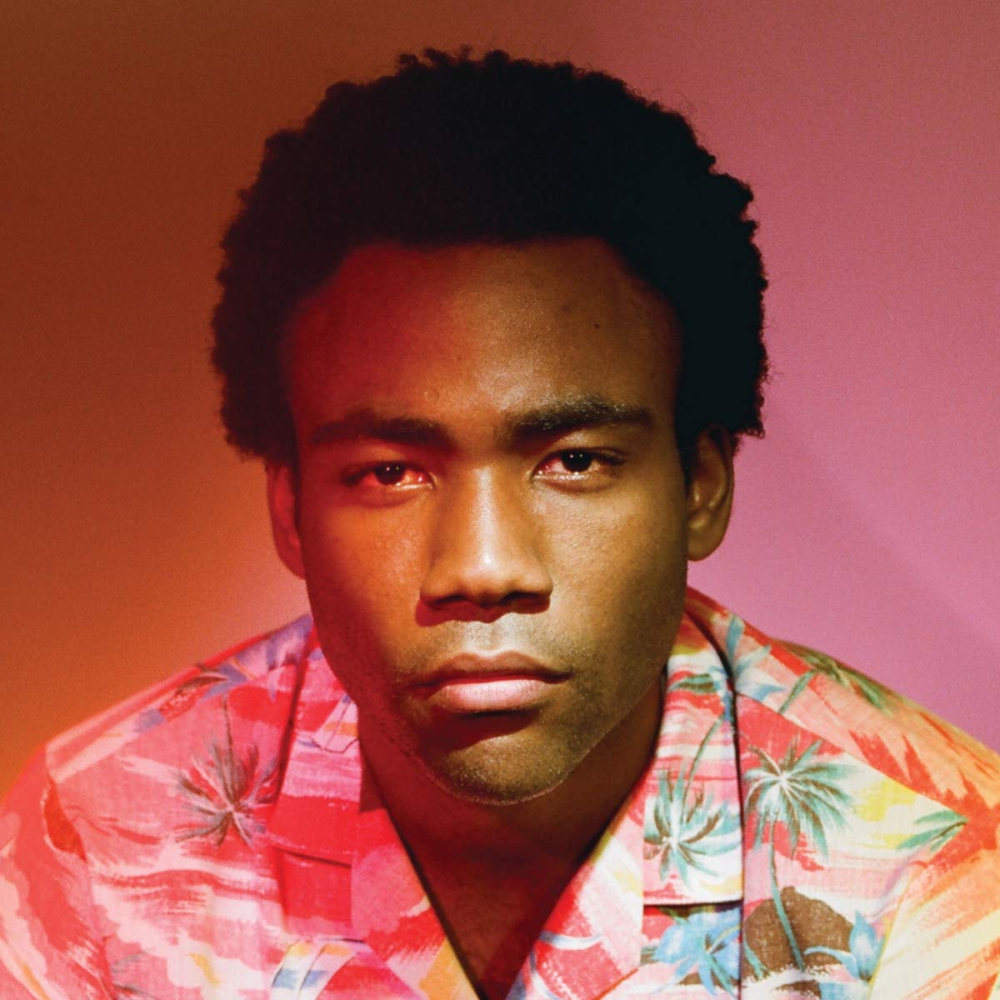

Donald Glover, who makes music under his alter ego, Childish Gambino, truly is a renaissance man. This album, which features snappy, witty, and often humorous lyricism mixed with his ear-captivating flow, is also accompanied by a 72-page screenplay and a short film. This concept-driven album is both brilliant and relateable, but sometimes, this affects its accessibility. You can't listen to this album casually; Gambino really wants you to sit down to appreciate it.
Truly a hidden gem, Laufey is one of those artists you want to scream to the world about but at the same time gatekeep to yourself.
The Icelandic-Chinese artist's debut EP, Street by Street is a perfect culmination of modernized jazz with an indie twist. Laufey has a distinct, unique voice that one might even claim as angelic, and with songs like James and Best Friend, truly touches your heartstrings to laugh, cry and scream all the same time.
I have no doubts she'll be the next top artist, so just remember: when the time comes, I was there first.
EVERY song in this album is an absolute BANGER!!! I normally don't like entire albums; but this album absolutely blew it out of the park. I've been a Hippo Campus fan for a while and their sound has changed a lot over the years, from more traditional band sound to a more experimental vibe with the addition of DeCarlo Jackson, a trumpeter. This album has a much different tone than their first,Bashful Creatures.
Mid-Air Thief is a Korean artist whose music is as mystical as his name. The combination of soft, delicate guitar and piano instrumentals with the mystical, whimsical, ond even ominous electronic instrumentals is absolutely captivating. Although the album is entirely in Korean, the overall atmospehre of this album is so specific, peculiar, and captivating that you don't need to know the lyrics to understand what Mid-Air was going for.